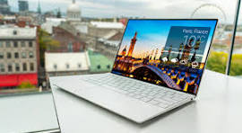

Laptops

What is Laptops???
A laptop is a type of portable personal computer that you can carry and use almost anywhere. Unlike a desktop computer, which is fixed in one place, a laptop combines all the main parts of a computer—screen, keyboard, touchpad (or trackpad), CPU, memory, storage, and battery—into a single, lightweight device.
Key points about laptops:
- Portable → small and light, designed to be carried.
- Battery-powered → can work without being plugged in for some hours.
- Integrated display & keyboard → no need for external monitor or keyboard (though you can connect them if you want).
- Wireless connectivity → usually comes with Wi-Fi, Bluetooth, and sometimes cellular data support.
- Uses → studying, office work, programming, gaming, internet browsing, multimedia, etc.
Types of laptops
Laptops come in different types depending on size, performance, and purpose. Here are the main types of laptops
- Traditional Laptop (Notebook)
- Standard laptop with keyboard, trackpad, and screen.
- Used for general tasks like browsing, office work, studies, etc.
- Ultrabook
- Very thin, lightweight, and portable.
- Long battery life, good performance.
- Example: Dell XPS, MacBook Air.
- Gaming Laptop
- High-performance laptops with powerful CPU + GPU (graphics card).
- Used for gaming, video editing, 3D rendering.
- Example: ASUS ROG, Acer Predator, MSI.
- 2-in-1 Laptop (Convertible / Hybrid)
- Works as a laptop + tablet (touchscreen, foldable, or detachable keyboard)
- Example: Microsoft Surface, Lenovo Yoga.
- Business Laptop
- Focus on security, durability, and battery.
- Used in offices and enterprises.
- Example: Lenovo ThinkPad, HP EliteBook.
- Netbook (Mini Laptop)
- Very small, lightweight, and low power.
- Used mainly for internet browsing, emails, and light tasks.
- Less common today.
- Chromebook
- Runs on Google’s ChromeOS.
- Light, cheap, cloud-based (most apps run online).
- Example: Google Pixelbook, HP Chromebook.
- MacBook
- Apple's laptops (MacBook Air, MacBook Pro).
- Runs on macOS.
- Popular for programming, design, and professional use.
Buy the laptops